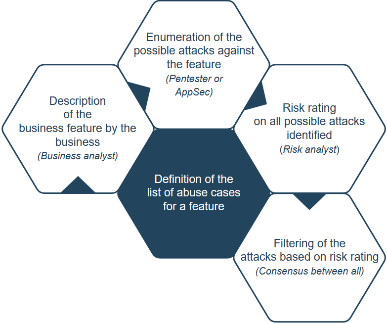

Abuse Case Cheat Sheet¶
Introduction¶
Often when the security level of an application is mentioned in requirements, the following expressions are met:
- The application must be secure.
- The application must defend against all attacks targeting this category of application.
- The application must defend against attacks from the OWASP TOP 10
- ...
These security requirements are too generic, and thus useless for a development team...
In order to build a secure application, from a pragmatic point of view, it is important to identify the attacks which the application must defend against, according to its business and technical context.
Objective¶
The objective of this cheat sheet is to provide an explanation of about what an Abuse Case is, why abuse cases are important when considering the security of an application, and further finally, to provide a proposal for a pragmatic approach to building a list of abuse cases and tracking them for every feature planned for implementation as part of an application. The cheat sheet may be used for this purpose regardless of the project methodology used (waterfall or agile).
Important note about this Cheat Sheet:
The main objective is to provide a pragmatic approach in order to allow a company or a project team
to start building and handling the list of abuse cases and then customize the elements
proposed to its context/culture in order to, finally, build its own method.
This cheat sheet can be seen as a getting-started tutorial.
Context & approach¶
Why clearly identify the attacks¶
Clearly identifying the attacks against which the application must defend is essential in order to enable the following steps in a project or sprint:
- Evaluate the business risk for each of the identified attacks in order perform a selection according to the business risk and the project/sprint budget.
- Derive security requirements and add them into the project specification or sprint's user stories and acceptance criteria.
- Estimate the overhead of provision in the initial project/sprint charge that will be necessary to implement the countermeasures.
- About countermeasures: Allow the project team to define them, and to determine in which location they are appropriate (network, infrastructure, code...) to be located.
Notion of Abuse Case¶
In order to help build the list of attacks, the notion of Abuse Cases is helpful.
An Abuse Case can be defined as:
A way to use a feature that was not expected by the implementer,
allowing an attacker to influence the feature or outcome of use of
the feature based on the attacker action (or input).
Synopsys define an Abuse Case like this:
Misuse and abuse cases describe how users misuse or exploit the weaknesses
of controls in software features to attack an application.
This can lead to tangible business impact when a direct attack against
business functionalities, which may bring in revenue or provide
positive user experience, are attacked.
Abuse cases can also be an effective way to drive security requirements
that lead to proper protection of these critical business use cases.
How to define the list of Abuse Cases¶
There are many different ways to define the list of abuse cases for a feature (that can be mapped to a user story in agile projects).
The project OWASP Open SAMM proposes the following approach in the Activity A of the Security Practice Threat Assessment for the Maturity level 2:
Further considering the threats to the organization, conduct a more formal analysis to determine
potential misuse or abuse of functionality. Typically, this process begins with identification of
normal usage scenarios, e.g. use-case diagrams if available.
If a formal abuse-case technique isn't used, generate a set of abuse-cases for each scenario by
starting with a statement of normal usage and brainstorming ways in which the statement might be
negated, in whole or in part. The simplest way to get started is to insert the word "no" or "not" into
the usage statement in as many ways as possible, typically around nouns and verbs. Each usage scenario
should generate several possible abuse-case statements.
Further elaborate the abuse-case statements to include any application-specific concerns based on the
business function of the software. The ultimate goal is for the completed set of abuse statements to
form a model for usage patterns that should be disallowed by the software. If desired, these abuse
cases can be combined with existing threat models.
After initial creation, abuse-case models should be updated for active projects during the design
phase. For existing projects, new requirements should be analyzed for potential abuse, and existing
projects should opportunistically build abuse-cases for established functionality where practical.
Open SAMM source: Threat Assessment Level 2 Activity A
Another way to achieve the building of the list can be the following (more bottom-up and collaboratively oriented):
Make a workshop that includes people with the following profiles:
- Business analyst: Will be the business key people that will describe each feature from a business point of view.
- Risk analyst: Will be the company's risk personnel that will evaluate the business risk from a proposed attack (sometimes it is the Business analyst depending on the company).
- Penetration tester: Will be the attacker that will propose attacks that they can perform on the business feature(s) in question. If the company does not have a person with this profile then it is possible to request the service of an external specialist. If possible, include 2 penetration testers with different backgrounds in order to increase the number of possible attacks that will be identified and considered.
- Technical leaders of the projects: Will be the project technical people and will allow technical exchange about attacks and countermeasures identified during the workshop.
- Quality assurance analyst or functional tester: Personnel that may have a good sense of how the application/functionality is intended to work (positive testing), not work (negative testing), and what things cause it to fail (failure cases).
During this workshop (duration will depend on the size of the feature list, but 4 hours is a good start) all business features that will be part of the project or the sprint will be processed. The output of the workshop will be a list of attacks (abuse cases) for all business features. All abuse cases will have a risk rating that allows for filtering and prioritization.
It is important to take into account Technical and Business kind of abuse cases and mark them accordingly.
Example:
- Technical flagged abuse case: Add Cross Site Scripting injection into a comment input field.
- Business flagged abuse case: Ability to modify arbitrary the price of an article in an online shop prior to pass an order causing the user to pay a lower amount for the wanted article.
When to define the list of Abuse Cases¶
On agile project, the definition workshop must be made after the meeting in which User Stories are included in a Sprint.
In waterfall projects, the definition workshop must be made when the business feature to implements are identified and known by the business.
Whatever the mode of project used (agile or waterfall), the abuse cases selected to be addressed must become security requirements in each feature specification section (waterfall) or User Story acceptance criteria (agile) in order to allow additional cost/effort evaluation, identification and implementation of the countermeasures.
Each abuse case must have a unique identifier in order to allow tracking throughout the whole project/sprint (details about this point will be given in the proposal section).
An example of unique ID format can be ABUSE_CASE_001.
The following figure provides an overview of the chaining of the different steps involved (from left to right):

Proposal¶
The proposal will focus on the output of the workshop explained in the previous section.
Step 1: Preparation of the workshop¶
First, even if it seems obvious, the key business people must be sure to know, understand and be able to explain the business features that will be processed during the workshop.
Secondly, create a new Microsoft Excel file (you can also use Google Sheets or any other similar software) with the following sheets (or tabs):
- FEATURES
- Will contain a table with the list of business features planned for the workshop.
- ABUSE CASES
- Will contain a table with all abuse cases identified during the workshop.
- COUNTERMEASURES
- Will contain a table with the list of possible countermeasures (light description) imagined for the abuse cases identified.
- This sheet is not mandatory, but it can be useful (for an abuse case to know), if a fix is easy to implement and then can impact the risk rating.
- Countermeasures can be identified by the AppSec profile during the workshop, because an AppSec person must be able to perform attacks but also to build or identify defenses (it is not always the case for the Pentester profile because this person's focus is generally on the attack side only, so, the combination Pentester + AppSec is very efficient to have a 360 degree view).
This is the representation of each sheet along with an example of content that will be filled during the workshop:
FEATURES sheet:
| Feature unique ID | Feature name | Feature short description |
|---|---|---|
| FEATURE_001 | DocumentUploadFeature | Allow user to upload document along a message |
COUNTERMEASURES sheet:
| Countermeasure unique ID | Countermeasure short description | Countermeasure help/hint |
|---|---|---|
| DEFENSE_001 | Validate the uploaded file by loading it into a parser | Use advice from the OWASP Cheat Sheet about file upload |
ABUSE CASES sheet:
| Abuse case unique ID | Feature ID impacted | Abuse case's attack description | Attack referential ID (if applicable) | CVSS V3 risk rating (score) | CVSS V3 string | Kind of abuse case | Countermeasure ID applicable | Handling decision (To Address or Risk Accepted) |
|---|---|---|---|---|---|---|---|---|
| ABUSE_CASE_001 | FEATURE_001 | Upload Office file with malicious macro in charge of dropping a malware | CAPEC-17 | HIGH (7.7) | CVSS:3.0/AV:N/AC:H/PR:L/UI:R/S:C/C:N/I:H/A:H | Technical | DEFENSE_001 | To Address |
Step 2: During the workshop¶
Use the spreadsheet to review all the features.
For each feature, follow this flow:
- Key business people explain the current feature from a business point of view.
- Penetration testers propose and explain a set of attacks that they can perform against the feature.
-
For each attack proposed:
- Appsec proposes a countermeasure and a preferred set up location (infrastructure, network, code, design...).
- Technical people give feedback about the feasibility of the proposed countermeasure.
- Penetration testers use the CVSS v3 (or other standard) calculator to determine a risk rating. (ex: CVSS V3 calculator)
- Risk key people accept/increase/decrease the rating to have final one that match the real business impact for the company.
-
Business, Risk and Technical key peoples find a consensus and filter the list of abuses for the current feature to keep the ones that must be addressed, and then flag them accordingly in the ABUSE CASES sheet (if risk is accepted then add a comment to explain why).
- Pass to next feature...
If the presence of penetration testers is not possible then you can use the following references to identify the applicable attacks on your features:
- OWASP Automated Threats to Web Applications
- OWASP Testing Guide
- OWASP Mobile Testing Guide
- Common Attack Pattern Enumeration and Classification (CAPEC)
Important note on attacks and countermeasure knowledge base(s):
With the time and across projects, you will obtain your own dictionary of attacks and countermeasures
that are applicable to the kind of application in your business domain.
This dictionary will speed up the future workshops in a significant way.
To promote the creation of this dictionary, you can, at the end of the project/sprint, gather the list
of attacks and countermeasures identified in a central location (wiki, database, file...) that will be
used during the next workshop in combination with input from penetration pesters.
Step 3: After the workshop¶
The spreadsheet contains (at this stage) the list of all abuse cases that must be handled and, potentially (depending on the capacity) corresponding countermeasures.
Now, there are two remaining task:
- Key business people must update the specification of each feature (waterfall) or the User Story of each feature (agile) to include the associated abuse cases as Security Requirements (waterfall) or Acceptance Criteria (agile).
- Key technical people must evaluate the overhead in terms of charge/effort to take into account the countermeasure.
Step 4: During implementation - Abuse cases handling tracking¶
In order to track the handling of all the abuse cases, the following approach can be used:
If one or several abuse cases are handled at:
- Design, Infrastructure or Network level
- Make a note in the documentation or schema to indicate that This design/network/infrastructure takes into account the abuse cases ABUSE_CASE_001, ABUSE_CASE_002, ABUSE_CASE_xxx.
- Code level
- Put a special comment in the classes/scripts/modules to indicate that This class/module/script takes into account the abuse cases ABUSE_CASE_001, ABUSE_CASE_002, ABUSE_CASE_xxx.
- Dedicated annotation like
@AbuseCase(ids={"ABUSE_CASE_001","ABUSE_CASE_002"})can be used to facilitate tracking and allow identification into integrated development environment.
Using this way, it becomes possible (via some minor scripting) to identify where abuse cases are addressed.
Step 5: During implementation - Abuse cases handling validation¶
As abuse cases are defined, it is possible to put in place automated or manual validations to ensure that:
- All the selected abuse cases are handled.
- An abuse case is correctly/completely handled.
Validations can be of the following kinds:
- Automated (run regularly at commit, daily or weekly in the Continuous Integration Jobs of the project):
- Custom audit rules in Static Application Security Testing (SAST) or Dynamic Application Security Testing (DAST) tools.
- Dedicated unit, integration or functional security oriented tests.
- ...
- Manual:
- Security code review between project's peers during the design or implementation.
- Provide the list of all abuse cases addressed to pentesters so that they may validate the protection efficiency for each abuse case during an intrusion test against the application (the pentester will validate that the attacks identified are no longer effective and will also try to find other possible attacks).
- ...
Adding automated tests also allow teams to track that countermeasures against the abuse cases are still effective/in place during a maintenance or bug fixing phase of a project (to prevent accidental removal/disabling). It is also useful when a Continuous Delivery approach is used, to ensure that all abuse cases protections are in place before opening access to the application.
Example of derivation of Abuse Cases as User Stories¶
The following section show an example of derivation of Abuse Cases as User Stories, here using the OWASP TOP 10 as input source.
Threat Oriented Personas:
- Malicious User
- Abusive User
- Unknowing User
A1:2017-Injection¶
Epic:
Almost any source of data can be an injection vector, environment variables, parameters, external and internal web services, and all types of users. Injection flaws occur when an attacker can send hostile data to an interpreter.
Abuse Case:
As an attacker, I will perform an injection attack (SQL, LDAP, XPath, or NoSQL queries, OS commands, XML parsers, SMTP headers, expression languages, and ORM queries) against input fields of the User or API interfaces
A2:2017-Broken Authentication¶
Epic:
Attackers have access to hundreds of millions of valid username and password combinations for credential stuffing, default administrative account lists, automated brute force, and dictionary attack tools. Session management attacks are well understood, particularly in relation to unexpired session tokens.
Abuse Case:
As an attacker, I have access to hundreds of millions of valid username and password combinations for credential stuffing.
Abuse Case:
As an attacker, I have default administrative account lists, automated brute force, and dictionary attack tools I use against login areas of the application and support systems.
Abuse Case:
As an attacker, I manipulate session tokens using expired and fake tokens to gain access.
A3:2017-Sensitive Data Exposure¶
Epic:
Rather than directly attacking crypto, attackers steal keys, execute man-in-the-middle attacks, or steal clear text data off the server, while in transit, or from the user's client, e.g. browser. A manual attack is generally required. Previously retrieved password databases could be brute forced by Graphics Processing Units (GPUs).
Abuse Case:
As an attacker, I steal keys that were exposed in the application to get unauthorized access to the application or system.
Abuse Case:
As an attacker, I execute man-in-the-middle attacks to get access to traffic and leverage it to obtain sensitive data and possibly get unauthorized access to the application.
Abuse Case:
As an attacker, I steal clear text data off the server, while in transit, or from the user's client, e.g. browser to get unauthorized access to the application or system.
Abuse Case:
As an attacker, I find and target old or weak cryptographic algorithms by capturing traffic and breaking the encryption.
A4:2017-XML External Entities (XXE)¶
Epic:
Attackers can exploit vulnerable XML processors if they can upload XML or include hostile content in an XML document, exploiting vulnerable code, dependencies or integrations.
Abuse Case:
As an attacker, I exploit vulnerable areas of the application where the user or system can upload XML to extract data, execute a remote request from the server, scan internal systems, perform a denial-of-service attack, as well as execute other attacks.
Abuse Case:
As an attacker, I include hostile content in an XML document which is uploaded to the application or system to extract data, execute a remote request from the server, scan internal systems, perform a denial-of-service attack, as well as execute other attacks.
Abuse Case:
As an attacker, I include malicious XML code to exploit vulnerable code, dependencies or integrations to extract data, execute a remote request from the server, scan internal systems, perform a denial-of-service attack (e.g. Billion Laughs attack), as well as execute other attacks.
A5:2017-Broken Access Control¶
Epic:
Exploitation of access control is a core skill of attackers. Access control is detectable using manual means, or possibly through automation for the absence of access controls in certain frameworks.
Abuse Case:
As an attacker, I bypass access control checks by modifying the URL, internal application state, or the HTML page, or simply using a custom API attack tool.
Abuse Case:
As an attacker, I manipulate the primary key and change it to access another's users record, allowing viewing or editing someone else's account.
Abuse Case:
As an attacker, I manipulate sessions, access tokens, or other access controls in the application to act as a user without being logged in, or acting as an admin/privileged user when logged in as a user.
Abuse Case:
As an attacker, I leverage metadata manipulation, such as replaying or tampering with a JSON Web Token (JWT) access control token or a cookie or hidden field manipulated to elevate privileges or abusing JWT invalidation.
Abuse Case:
As an attacker, I exploit Cross-Origin Resource Sharing CORS misconfiguration allowing unauthorized API access.
Abuse Case:
As an attacker, I force browsing to authenticated pages as an unauthenticated user or to privileged pages as a standard user.
Abuse Case:
As an attacker, I access APIs with missing access controls for POST, PUT and DELETE.
Abuse Case:
As an attacker, I target default crypto keys in use, weak crypto keys generated or re-used, or keys where rotation missing is missing.
Abuse Case:
As an attacker, I find areas where the user agent (e.g. app, mail client) does not verify if the received server certificate is valid and perform attacks where I get unauthorized access to data.
A6:2017-Security Misconfiguration¶
Epic:
Attackers will often attempt to exploit unpatched flaws or access default accounts, unused pages, unprotected files and directories, etc to gain unauthorized access or knowledge of the system.
Abuse Case:
As an attacker, I find and exploit missing appropriate security hardening configurations on any part of the application stack, or improperly configured permissions on cloud services.
Abuse Case:
As an attacker, I find unnecessary features which are enabled or installed (e.g. unnecessary ports, services, pages, accounts, or privileges) and attack or exploit the weakness.
Abuse Case:
As an attacker, I use default accounts and their passwords to access systems, interfaces, or perform actions on components which I should not be able to.
Abuse Case:
As an attacker, I find areas of the application where error handling reveals stack traces or other overly informative error messages I can use for further exploitation.
Abuse Case:
As an attacker, I find areas where upgraded systems, latest security features are disabled or not configured securely.
Abuse Case:
As an attacker, I find security settings in the application servers, application frameworks (e.g. Struts, Spring, ASP.NET), libraries, databases, etc. not set to secure values.
Abuse Case:
As an attacker, I find the server does not send security headers or directives or they are not set to secure values.
A7:2017-Cross-Site Scripting (XSS)¶
Epic:
XSS is the second most prevalent issue in the OWASP Top 10, and is found in around two-thirds of all applications.
Abuse Case:
As an attacker, I perform reflected XSS where the application or API includes unvalidated and unescaped user input as part of HTML output. My successful attack can allow the attacker to execution of arbitrary HTML and JavaScript in my victim's browser. Typically the victim will need to interact with some malicious link that points to an attacker-controlled page, such as malicious watering hole websites, advertisements, or similar.
Abuse Case:
As an attacker, I perform stored XSS where the application or API stores unsanitized user input that is viewed at a later time by another user or an administrator.
Abuse Case:
As an attacker, I perform DOM XSS where JavaScript frameworks, single-page applications, and APIs that dynamically include attacker-controllable data to a page is vulnerable to DOM XSS.
A8:2017-Insecure Deserialization¶
Epic:
Exploitation of deserialization is somewhat difficult, as off-the-shelf exploits rarely work without changes or tweaks to the underlying exploit code.
Abuse Case:
As an attacker, I find areas of the application and APIs where deserialization of hostile or tampered objects can be supplied. As a result, I can focus on an object and data structure related attacks where the attacker modifies application logic or achieves arbitrary remote code execution if there are classes available to the application that can change behavior during or after deserialization. Or I focus on data tampering attacks such as access-control-related attacks where existing data structures are used but the content is changed.
A9:2017-Using Components with Known Vulnerabilities¶
Epic:
While it is easy to find already-written exploits for many known vulnerabilities, other vulnerabilities require concentrated effort to develop a custom exploit.
Abuse Case:
As an attacker, I find common open source or closed source packages with weaknesses and perform attacks against vulnerabilities and exploits which are disclosed
A10:2017-Insufficient Logging & Monitoring¶
Epic:
Exploitation of insufficient logging and monitoring is the bedrock of nearly every major incident. Attackers rely on the lack of monitoring and timely response to achieve their goals without being detected. In 2016, identifying a breach took an average of 191 days so plenty of time for damage to be inflicted.
Abuse Case:
As an attacker, I attack an organization and the logs, monitoring systems, and teams do not see or respond to my attacks.
Sources of the schemas¶
All figures were created using https://www.draw.io/ site and exported (as PNG image) for integration into this article.
All XML descriptor files for each schema are available below (using XML description, modification of the schema is possible using DRAW.IO site):